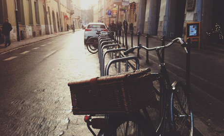
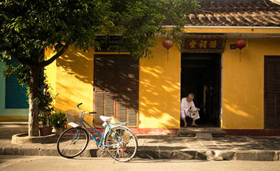
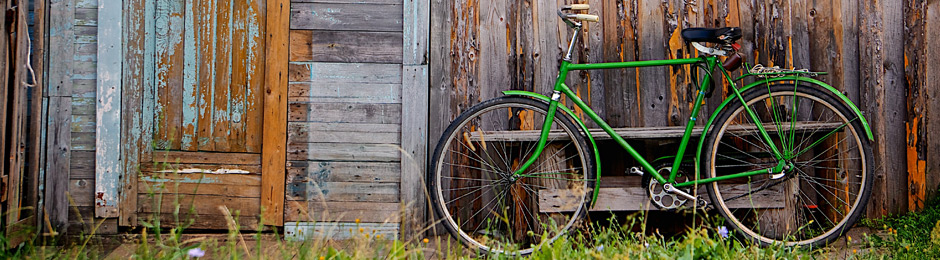

“As experiências ferradas demonstram que a construção das estruturas é uma desgraça à capacidade de equalização das condições financeiras e administrativas exigidas.”
Barbara Moss
“As experiências acumuladas demonstram que a consolidação das estruturas desafia a capacidade de equalização das condições financeiras e administrativas exigidas.”
Bernardo José
“As experiências acumuladas mostra que a consolidação das estruturas desafia a falta de equalização das condições financeiras e destrutivas exigidas.”
Jhony Ratão



"O verdadeiro segredo da felicidade está em ter um genuíno interesse por todos os detalhes da vida cotidiana"